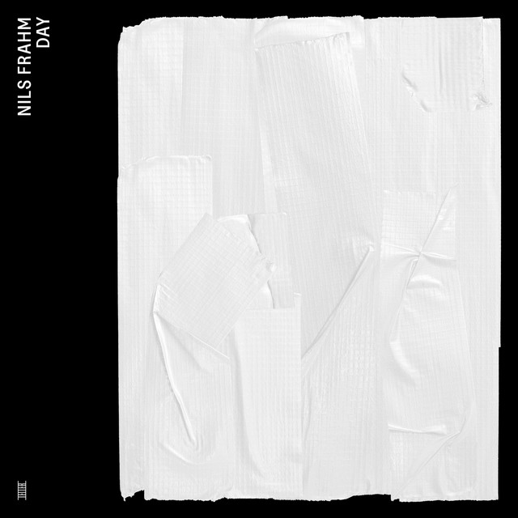

Nils Frahm - Day



Información del álbum facilitada por discogs.com:
Fecha de lanzamiento: 2022
Géneros: Electronic
Estilos: Ambient
Tracklist:
A. The Dog With 1000 Faces 26:21
B1. Mussel Memory 13:20
B2. Seagull Scene 13:09
C. Sheep In Black And White 24:48
D. Stepping Stone 18:11
E. Briefly 27:06
F1. Right Right Right 7:26
F2. World Of Squares 15:02
G. Lemon Day 18:32
H. Do Dream 22:05